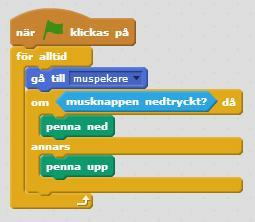
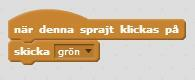
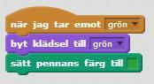
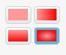
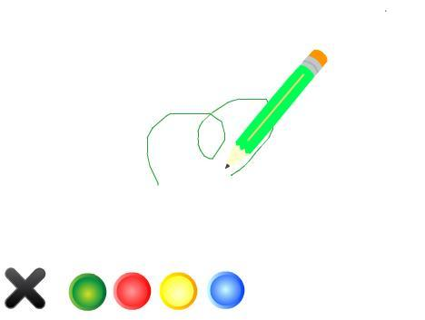
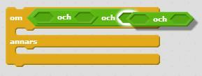
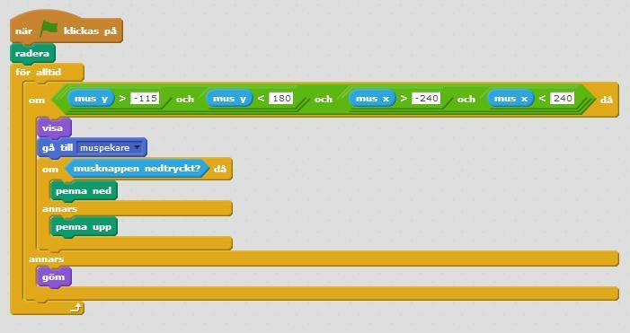
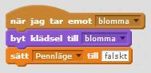
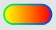

Nu kommer du att få skapa ett ritprogram där du sedan kan göra egna konstverk! Programmet låter dig rita med olika färgpennor, sudda med suddgummi och måla med stämplar som du själv väljer.
Du kan se ett exempel på ritprogrammet här: https://scratch.mit.edu/projects/82515788
Börja med att skapa en penna som ritar när du drar runt den på scenen.
Skapa ett nytt Scratch-projekt och ta bort katten. Välj en ny sprajt från biblioteket: Saker/Pencil. Byt namn på den nya sprajten till "penna".
Gå till fliken KLÄDSLAR. Ändra klädselns centrum till pennans spets, genom att flytta korsets mittpunkt dit. Det är viktigt för att pennan ska kunna rita från spetsen!


Skapa ett skript för pennan som säger:

Nu vill du kunna använda sprajten som en riktig penna, som du kan styra med musen och rita med genom att trycka ned musknappen. Titta under skriptfliken PENNA, här finns alla block som har att göra med att kunna rita.
Skapa ett skript som säger att när musknappen är nedtryckt ska pennan vara nere, och annars ska pennan vara uppe. Lägg ett KONTROLL -block i ditt första skript, som säger att:
OM musknappen är nedtryckt ska penna vara ned
ANNARS ska penna vara upp

Testa ditt projekt! Klicka på START. Följer pennan muspekaren? Vad händer om du håller nere musknappen och flyttar musen? (Tänk inte på vilken färg pennan har, det kommer du till senare!) Testa att stänga av och starta programmet på nytt. Märker du att det du har ritat fortsätter att vara kvar? Det behöver du ändra på!
Testa ditt projekt! Klicka på START. Försvinner din teckning när du klickar på den gröna flaggan?
Nu vill du lägga till en knapp som suddar hela teckningen så att du inte behöver starta och stoppa projektet varje gång. Här i exemplet används ett kryss, men du kan välja att göra en egen knapp.
Lägg till sprajten Saker/Button5 från biblioteket.
Byt namn på sprajten till "radera". Förminska den så att den inte tar för stor plats på scenen och placera knappen där du vill ha den, t ex längst ner till vänster.
Skapa ett skript som säger att den ska radera allt när du klickar på sprajten. Detta kräver endast två block, kan du lista ut vilka? Titta annars hur du gjorde i skriptet för sprajten "penna".
Testa ditt projekt! Klicka på START och rita något. Kan du sudda hela teckningen genom att klicka på sprajten "radera"?
Än så länge kan du bara rita blåa streck men det ska så klart gå att rita med andra färger! För att göra det behöver du först nya sprajter för olika färgade knappar som du ska kunna klicka på för att ändra färg på pennan.
Välj en sprajt som ser ut som en knapp, t ex Saker/Button1 och ge den namnet "grön knapp". Förminska knappen så att du får plats med flera bredvid varandra, och placera den till exempel längst ned på scenen bredvid "radera"-knappen.
Skapa ett skript för sprajten "grön knapp" som säger:
Starta när sprajten klickas på
Skicka meddelandet "grön"

Det är allt som knappen behöver göra! Själva jobbet med att byta färg görs av sprajten "penna".
Klicka på sprajten "penna" och gå in på KLÄDSLAR. Här finns två klädslar som båda föreställer gula pennor. Ta bort en av klädslarna. Kopiera den du behållit – en gång för varje färg du vill ha: t ex grön, röd, blå.
Markera de kopierade klädslarna och ändra färg på varje klädsel med FÄRGLÄGG EN FORM (färgburken). Se till så att alla klädslar får olika färg.
Byt namn på klädslarna så att de heter som sin färg, t ex "grön".
Skapa nu ett nytt skript för sprajten "penna" som säger:
Starta när den tar emot meddelandet "grön"
Då byt klädsel till "grön"
Sedan sätt pennans färg till grön

Tips: Klicka på den färgade rutan i blocket sätt pennans färg till och klicka sedan på din gröna knapp på scenen, så får du rätt färg att rita med.
Klicka på START och rita något. Klicka nu på den gröna knappen och rita igen. Byter pennan klädsel? Ritar den i grönt nu? Ritar den från pennspetsen?
Nu ska du få göra fler knappar för alla olika färger, och skript som ändrar pennans färg när du klickar på knappen.
Kopiera sprajten "grön knapp" så att du har lika många knappar som du vill ha färger. Om du tittar på skript-fliken ser du att även skriptet har kopierats.
Börja med att döpa om knapparna till t ex "gul knapp", "röd knapp", "blå knapp" och placera dem där du vill ha dem på scenen, förslagsvis i en rad längst ned.
Nu behöver du byta färg på knapparna. Gå in under KLÄDSLAR. Ändra färg med FÄRGLÄGG EN FORM (färgburken).


Tips: Använd tonade färger för att få knapparna att blänka! Blanda t ex rött och rosa för att få till en tonad röd knapp. Om knappen ser för ljus ut, som t ex den gula knappen, tona mot en mörkare färg.
Ungefär så här borde din knapprad se ut på scenen:

Nu behöver du ändra i skripten för varje sprajt. De ska skicka meddelande för sin färg när de klickas på.
Gå sedan till sprajten "penna". Kopiera skriptet som tar emot meddelande, och gör ett sådant skript för varje ny färg. Skripten ska byta klädsel och ändra pennans färg till den färg som meddelandet anger.
Testa ditt projekt! Klicka på START och rita något. Klicka nu på de olika knapparna. Fungerar alla färgvalknappar? Byter de pennans klädsel till rätt färg? Får de pennan att måla med rätt färg? Ritar alla pennans klädslar med pennspetsen?
Du har säkert märkt att du kan måla överallt på skärmen, till och med där knapparna sitter. Nu kommer du att få göra en bakgrund till ritprogrammet, och bestämma var pennan ska kunna rita – och inte rita.
Börja med att rita en egen bakgrund. Välj Scenen och gå till BAKGRUNDER. Välj själv hur du vill att bakgrunden ska se ut!

Tips: Här i exemplet är knappraden en mörkt grå REKTANGEL som täcker hela nederkanten. För ritytan kan du använda FYLL MED FÄRG om du t ex vill ha en ljusgrå nyans istället för helt vit.
Nu behöver du ta reda på din ritytas KOORDINATER. Hela Scenen går mellan -240 och 240 på x-axeln och -180 och 180 på y-axeln, det kan du se om du för muspekaren vänster och höger (X), uppåt och nedåt (Y) på Scenen. Titta längst ned till höger under Scenen för att se hur värdena ändras!
Ta reda på koordinaterna för din rityta genom att dra muspekaren till ritytans kanter. I det här exemplet är ritytan mellan 240 och -240 på x-axeln och 180 och -115 på y-axeln.
Gå till skriptet för sprajten "penna" och ändra inuti loopen. Nu är det många block som behövs för att det ska bli rätt! Du behöver dels använda KÄNNA AV var musen är, dels plocka fram OPERATORER som säger vad som måste stämma för att skriptet ska utföras:
Verkar det krångligt? Här är några tips!
Tips 1: OCH är en OPERATOR som säger att allt i skriptet måste stämma för att skriptet ska utföras. Här behöver du pussla in totalt tre block med och för att få in alla värden!

Tips 2: Mer än har symbolen >. Mindre än har symbolen <. De är båda OPERATORER.

Tips 3: Tänk på att du ska sätta in koordinaterna för din rityta. Här gäller det att få alla värden rätt, allt måste stämma för att skriptet ska utföras och pennan visas. Testa dig fram om det blir fel!
Testa ditt projekt! Klicka på START och rita något. Syns pennan? Vad händer med pennan när du lämnar ritytan? Kan du fortfarande rita inom ritytan? Kan du rita utanför ritytan?
 Så här ser vårt exempel ut, tänk på att du behöver skriva in koordinaterna för din rityta!
Det är kul att kunna rita, men alla gör misstag och då kanske du vill kunna sudda? Nu ska du lägga till ett verktyg som ser ut att sudda, men som egentligen ritar med bakgrundsfärgen.
Välj en ny sprajt för suddgummi, här i exemplet Saker/Button3. Förminska den om det behövs och placera i knappraden. Ändra namnet till "sudd".
Gör ett skript för sprajten som säger:
Starta när sprajten klickas på
Skicka meddelandet "sudda"
Markera sprajten "penna" och gå till KLÄDSLAR. Lägg till klädseln Saker/Button3 från biblioteket. Ändra namnet till "sudd".
Skapa ett nytt skript för sprajten "penna" som säger:
Starta när den tar emot *meddelandet* "sudda"
Byt klädsel till "sudd".
Sätt pennans färg till samma färg som bakgrunden
Sätt pennans storlek till en större storlek – testa dig fram vad som passar för suddet!
Lägg nu in block som sätter pennans storlek för alla skript som byter färg på pennan, annars kommer storleken ändras utifrån suddet. Välj själv hur tjockt pennstreck du vill ha.
Tips: Om pennstorleken är väldigt stor kan du behöva ändra koordinaterna för ritytan, annars kan det bli så att du ritar utanför. Samma gäller för suddet, testa så att du inte kan sudda utanför!
Testa ditt projekt! Klicka på START och rita något, klicka sedan på suddgummit. Suddar den? Fungerar det ända fram till kanten – men inte utanför? Kan du byta mellan penna och sudd?
Nu har du ett fungerande ritprogram! För att göra det extra roligt kan du nu lägga till stämplar.
Nu ska skapa ett stämpelverktyg som du kan använda för att stämpla små bilder på teckningen. Det går att göra flera olika stämplar och du väljer själv hur de ska se ut.
Du kommer att använda sprajten "penna" även när du stämplar. För att sprajten ska veta om den ska rita eller stämpla, behöver du skapa en VARIABEL för "pennläge". Är pennläge "sant" ska sprajten rita, är pennläge "falskt" ska den stämpla.
Välj en ny sprajt från biblioteket. Du kan välja helt fritt, som exempel använder vi en blomma: Saker/Flower Shape.
Förminska sprajten du skapade och placera den i din knapprad. Om du behöver kan du förminska alla knappar för att få plats med flera stämplar.

Gör ett skript för sprajten som säger:
Starta när sprajten klickas på
Skicka meddelandet "blomma"– eller det som din stämpel föreställer
Gå till sprajten "penna" och gå till fliken KLÄDSLAR. Lägg till en ny klädsel och välj samma bild som stämpeln, här Saker/Flower Shape. Döp klädseln till det bilden föreställer, t ex "blomma".
För sprajten "penna" behöver du nu skapa en VARIABEL som du kallar "pennläge" och som bara gäller för den sprajten. Gör ett nytt skript för sprajten "penna" som säger:
Starta när den tar emot meddelandet "blomma"
Byt klädsel till "blomma"
Sätt "pennläge" till "falskt"

Lägg till ett block för att sätta pennläge till "sant" i alla dina skript som väljer färg på pennan och även den som suddar.
Nu behöver du se till att variabeln "pennläge" kontrolleras när musknappen är nere, så att sprajten "penna" vet om den ska rita eller stämpla.
Lägg in ett skript innanför Om musknappen är nedtryckt som säger:
OM pennläge = "sant"
ska vi använda penna ned
ANNARS stämpla

Testa ditt projekt! Klicka på START och prova stämplarna. Fungerar de som du vill? Vad händer om du byter tillbaka till någon av färgerna – får du tillbaka pennan?
Grattis, nu har du gjort klart uppgiften.
Glöm inte att spara ditt projekt! Döp det gärna till uppgiftens namn så att du enkelt kan hitta den igen.
Testa ditt projekt
Visa gärna någon det som du har gjort och låt dem testa. Tryck på DELA för att andra ska kunna hitta spelet på Scratch. Gå ut till projektsidan och låt någon annan testa spelet!
Har du tid över? Här kommer en utmaning för dig som vill fortsätta.
Du kan lägga till en specialpenna som målar i regnbågens alla färger istället för bara med en färg.
Lägg till en sprajt eller rita en egen som ska vara knappen för regnbågsfärg. Placera den i din knapprad. Här i exemplet har vi använt Saker/Button2 och ändrat färg på klädseln.

Gör ett skript som säger att den ska skicka meddelandet "regnbåge" när du klickar på den.
Gå till sprajten "penna" och lägg till en klädsel för regnbågspennan. Du får själv hitta på hur du vill att regnbågspennan ska se ut!
Skapa ett skript som för alltid ändrar pennans färg när den tar emot meddelandet "regnbåge". Färgen ska ändras ett visst antal gånger och sedan vänta en stund för att skapa regnbågseffekten. Testa dig fram för att hitta bra värden!
Testa ditt projekt! Klicka på START och prova regnbågspennan. Fungerar den som du vill? Vad händer om du byter tillbaka till någon av färgerna – får du tillbaka rätt färg?

Om pennan fortsätter rita med regnbågsfärg även när du trycker på någon annan knapp, beror det på att du inte har sagt åt sprajten när den ska sluta ändra pennans färg. Det ska du göra nu.
Tips: Titta på hur du gjorde för variabeln "pennläge". Använd "sant" och "falskt" på samma sätt för att kontrollera om sprajten ska rita med regnbågsfärg eller inte. Du behöver använda sätt "regnbågsfärg" till "falskt" för varje skript där du inte vill att pennan ska rita med regnbågsfärg.
Testa ditt projekt! Kan du byta mellan regnbågspennan och de andra färgerna?
Varför kan det vara viktigt att ändra centrum på en sprajt?
Vad för trick använder du för att radera det du ritat?
Vad används en logisk operator, som t ex OCH, till?